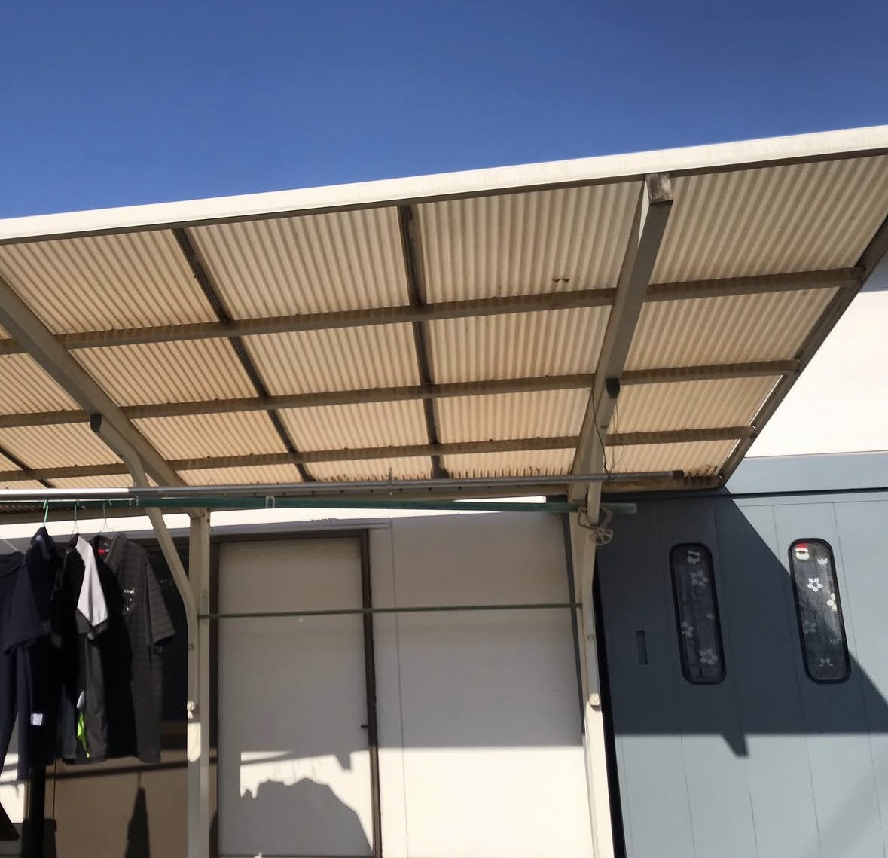
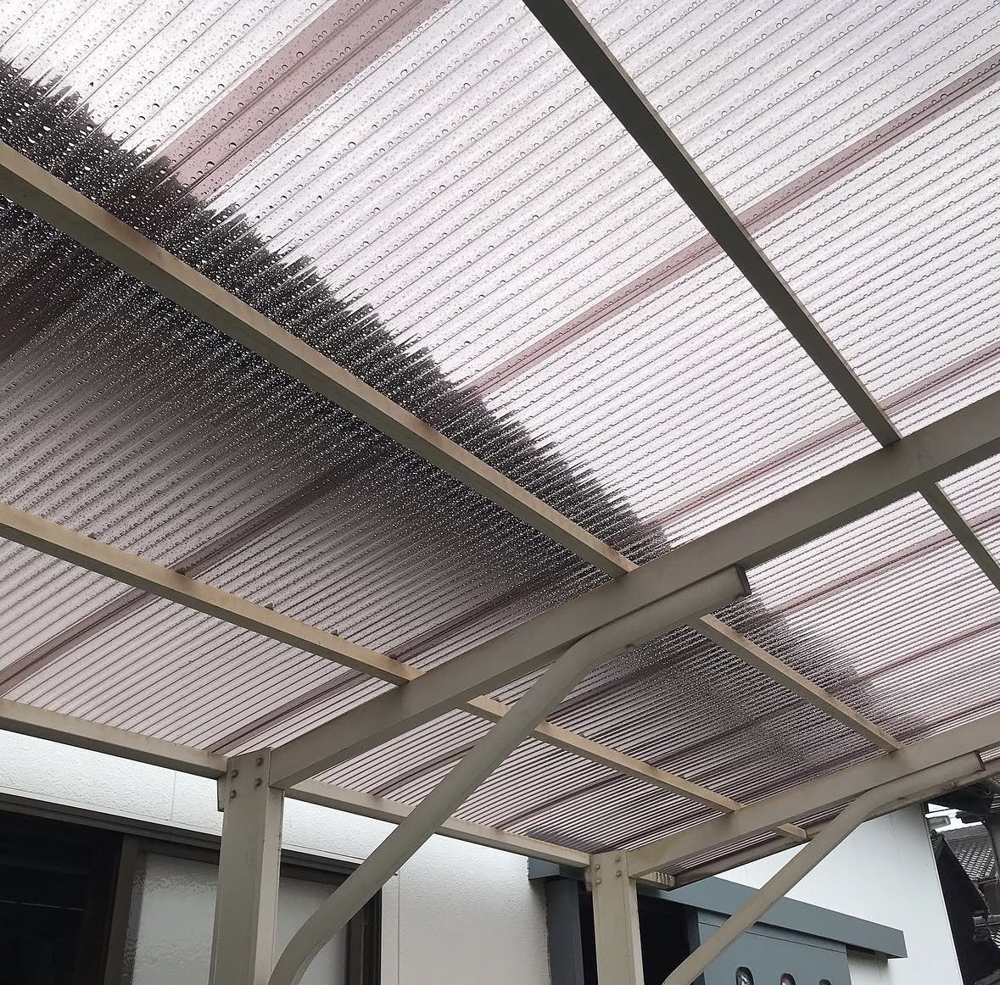
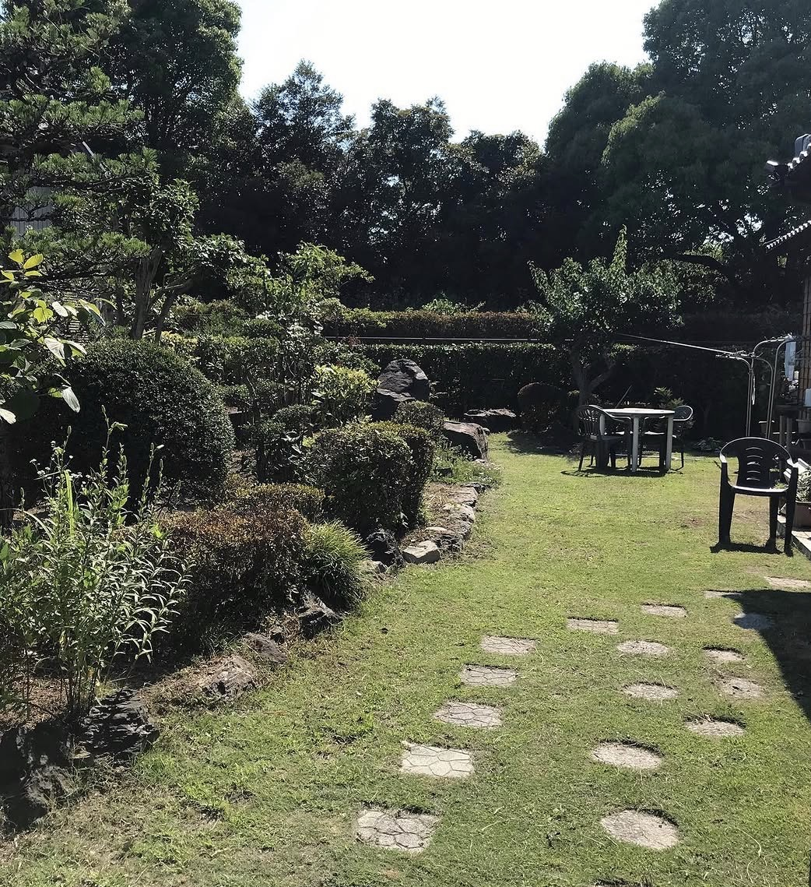
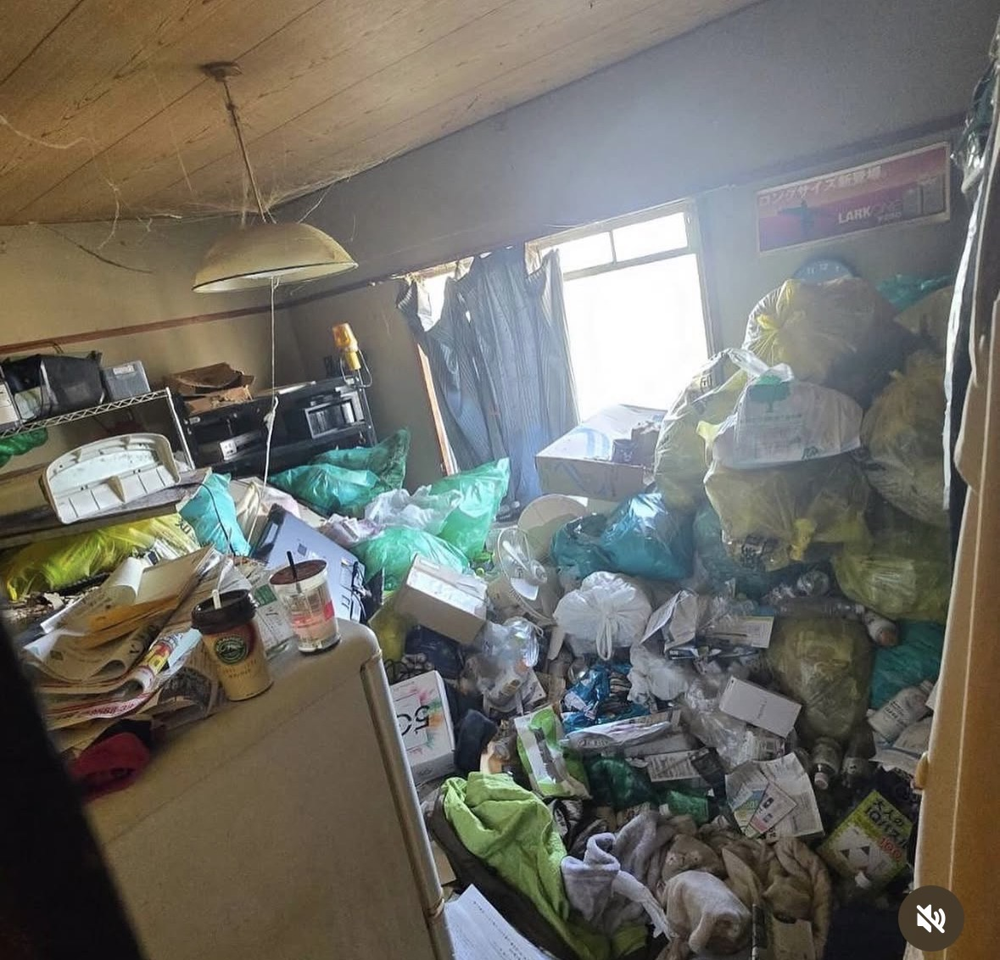
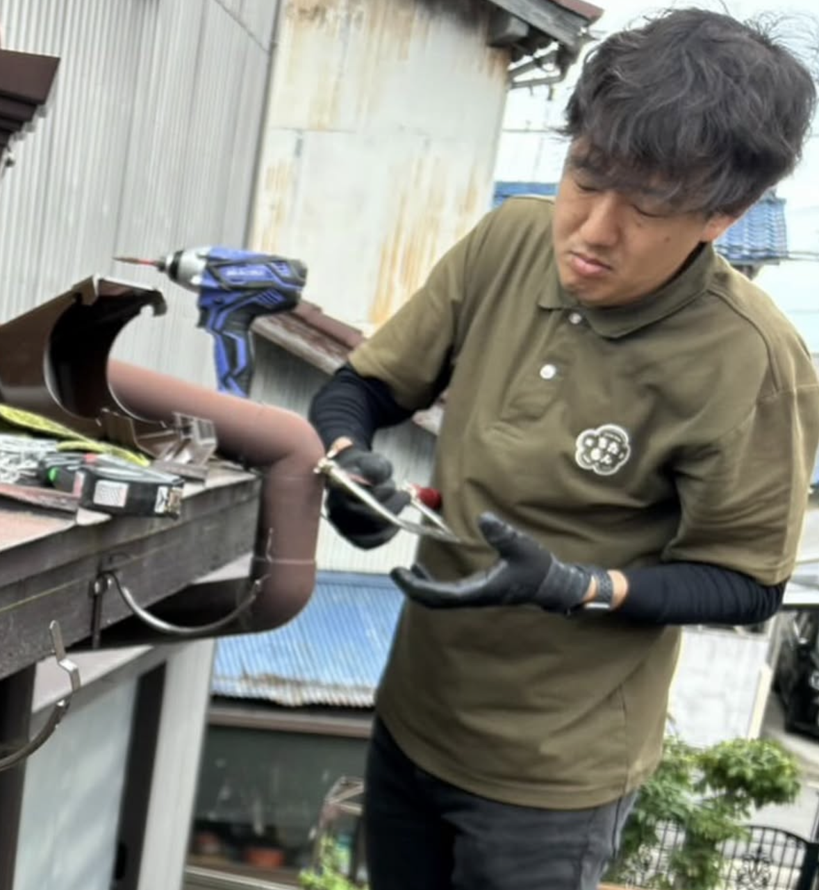
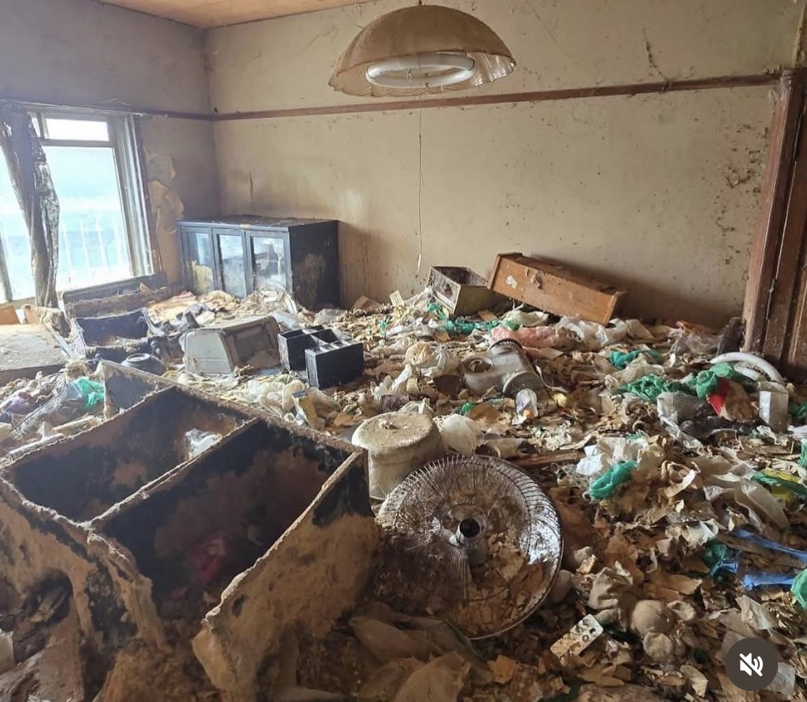
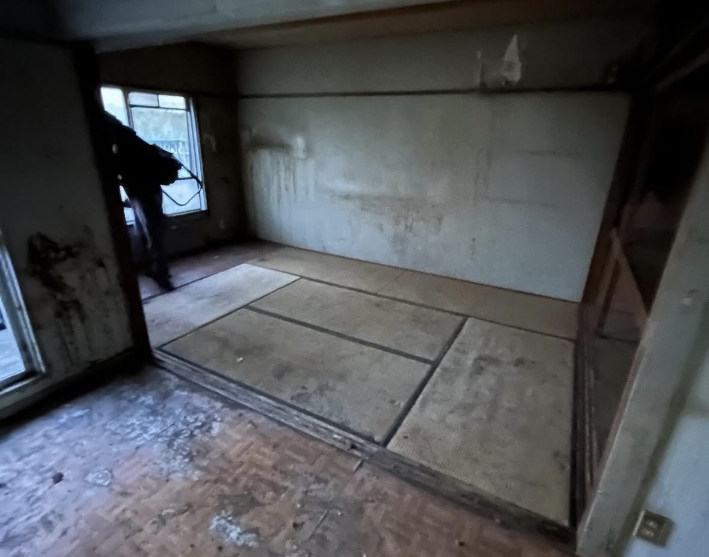

波板交換


古くなった波板は、割れ・浮き・雨漏りの原因になることがあります。一見すると小さな修繕でも、脚立作業や高所作業、既存部材の撤去、処分、周辺への配慮など、丁寧な段取りが必要です。
知多なおゆきサポートでは、現地の状態を確認し、必要な範囲を見極めたうえで、無理のない方法で波板交換を行います。
小さな修繕こそ、暮らしの安心につながります。
「これ、どこに頼めばいいの？」というお困りごともご相談ください。
大切にしていること
仕事をするだけでなく、
その困りごとの背景を
丁寧に聞くことから始めます。
ただ作業をするだけでなく、なぜ困っているのか、何が一番大変なのかをまず聞くことを大切にしています。
ホームセンター材で十分な場合は、その選択肢をご提示します。高額な工事を不必要にすすめることはしません。
プロ用材料が必要な場合や、専門業者への依頼が適切な場合は、その理由を丁寧にご説明します。
自分でできること、専門業者に任せた方がよいことを整理して、最適な方法をご提案します。
地域に関わっているからこそ、顔が見える関係を大切にしています。信頼こそが一番の資産です。
鍵をお預かりする作業や留守中の作業など、防犯面・信頼面にも慎重に対応します。
「納得できる説明」と
「誠実な段取り」を
大切にします。
対応できること



内容によっては、専門業者への依頼をおすすめする場合があります。無理に自分で受けるのではなく、安全性・専門性・費用面を踏まえて、最適な方法をご提案します。
相談・対応事例
実際のご依頼をもとにご紹介します。（個人情報の保護のため、詳細は一部変更しています）


古くなった波板は、割れ・浮き・雨漏りの原因になることがあります。一見すると小さな修繕でも、脚立作業や高所作業、既存部材の撤去、処分、周辺への配慮など、丁寧な段取りが必要です。
知多なおゆきサポートでは、現地の状態を確認し、必要な範囲を見極めたうえで、無理のない方法で波板交換を行います。
小さな修繕こそ、暮らしの安心につながります。
「これ、どこに頼めばいいの？」というお困りごともご相談ください。


大量の不用品や生活ごみがある現場では、ただ片付けるだけでなく、搬出経路の確認、分別、処分方法、近隣への配慮がとても重要です。
状況によっては、家の中に入る前の準備や、安全確保から始める必要があります。一つひとつ確認しながら、無理なく、現実的に進めていきます。
どこから手をつけていいかわからない
そんな状態でも大丈夫です。まずは現場を見て、必要な作業を整理します。
片付けは、暮らしを立て直す第一歩。
責めるのではなく、一緒に出口を考えます。
解体、撤去、整地、外構工事までを含む大きな案件にも対応しています。過去には、解体から外構までを含む約800万円規模の案件にも関わらせていただきました。
このような複合的な工事では、作業そのものだけでなく、工程管理、関係業者との調整、費用感の整理、近隣対応、完成後の使いやすさまで見通すことが大切です。
知多なおゆきサポートでは、単なる作業員ではなく、暮らしや土地の使い方まで含めて相談できる窓口として、必要に応じて専門業者とも連携しながら進めます。
小さな修繕から、大きな工事の相談まで。
「誰に相談すればいいかわからない」を、最初に受け止めます。
料金の考え方
1回（1日）の作業代
19,500円〜
（税込 21,450円〜）
作業内容・人数・移動距離等により変動します
便利屋の費用は「作業時間」だけでなく、処分費・道具・保険・安全管理・移動・責任も含めて考える必要があります。
価格だけで判断されるのではなく、何に費用がかかっているのかをできるだけ見えるようにします。
ご依頼の流れ
困りごとの内容を、お気軽にお知らせください。
LINEでは写真を送っていただくと、よりスムーズに状況を把握できます。
電話でのご相談も、もちろんOKです。
お送りいただいた写真や状況をもとに、内容を確認します。追加でお聞きすることもあります。
内容によっては、現地を直接確認させていただきます。
何をどうするか、費用の目安はどのくらいかをご説明します。わからないことはご遠慮なくお聞きください。
ご納得いただいた上で、作業または業者手配を進めます。
完了後に内容を一緒に確認していただき、お支払いをお願いします。
よくある質問
もちろんです。「こんなこと頼めるかな？」そのきっかけが一番大事です。まずお電話ください。お伺いいたします☺
知多市周辺を中心に対応していますが、知多半島の北部は実家や元職場など、特にご縁が多いです。
もちろん大丈夫です、知多市内の相談に、ガソリン代をお願いすることもなければ、無理なご提案もいたしません。ここが名古屋を始めとした遠方からの業者との大きな違いです。近所の相談役が、知多なおゆきサポートです。
緊急度や予定によります。瓦の落下など、急ぎの相談もありますが、危険作業や専門性が高い内容は無理に対応せず、適切な方法をご案内します。
基本的には相談可能です！これまで断ったことはありませんが、20cmを超えるような大きな巣や危険性が高い場合は、専門業者への依頼をおすすめします。
内容によっては可能ですが、鍵のお預かりや防犯面について慎重に確認した上で対応します。
お気軽にご相談ください
暮らしの困りごとは、
名前がつけにくいものも多いです。
そして、そのおうちならではの悩みも。
でも大丈夫です。
仕事をしていると、
それが普通であり、
みなさん、それぞれ
それぞれで悩んでいるのです。
そして僕も同じです。
草刈り、修繕、片付け、
業者選び、見積もりの不安。
どこに相談したらよいか
わからない時こそ、
まずは一度ご連絡ください。

LINEはこちらから
友だち追加できます